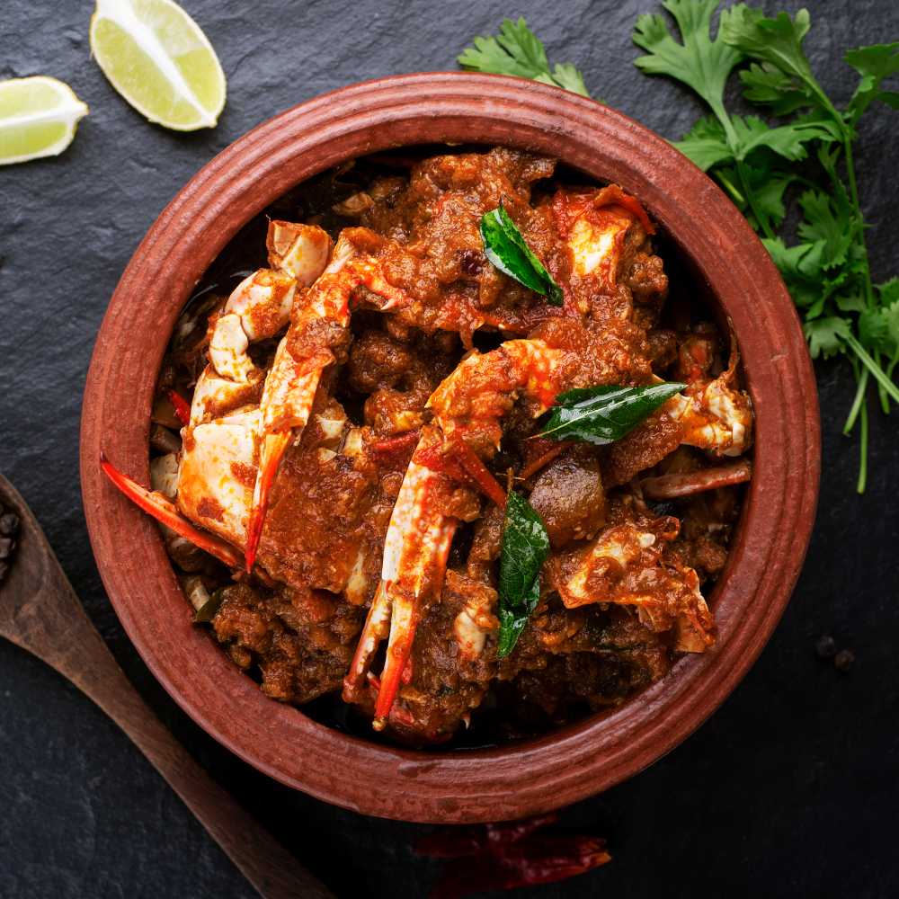

The recipe library
Recipes worth
passing on.
A growing archive of Goan recipes, family rituals, and the ingredients that carry them forward.
CHAKLI PHOTOGRAPH
TO BE ADDED
TO BE ADDED
Festival-time snack
Chakli
A crisp, spiced spiral made slowly and shared generously.

Everyday curry
Hooman
A coconut-forward curry for rice, conversation and returning to the table.
PATOLI PHOTOGRAPH
TO BE ADDED
TO BE ADDED
Festival-time sweet
Patoli
Rice dumplings folded in turmeric leaf, filled with coconut and jaggery.